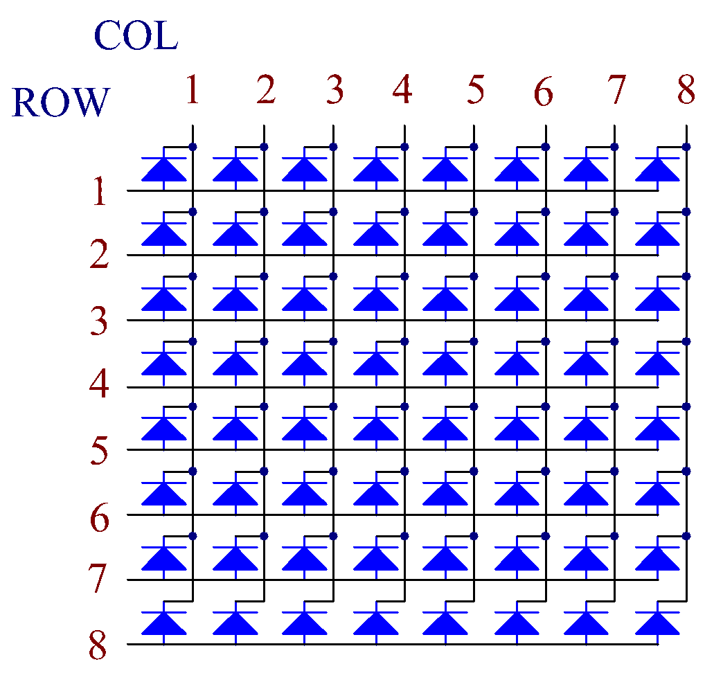

Bemerkung
Hallo und willkommen in der SunFounder Raspberry Pi & Arduino & ESP32 Enthusiasten-Gemeinschaft auf Facebook! Tauchen Sie tiefer ein in die Welt von Raspberry Pi, Arduino und ESP32 mit anderen Enthusiasten.
Warum beitreten?
Expertenunterstützung: Lösen Sie Nachverkaufsprobleme und technische Herausforderungen mit Hilfe unserer Gemeinschaft und unseres Teams.
Lernen & Teilen: Tauschen Sie Tipps und Anleitungen aus, um Ihre Fähigkeiten zu verbessern.
Exklusive Vorschauen: Erhalten Sie frühzeitigen Zugang zu neuen Produktankündigungen und exklusiven Einblicken.
Spezialrabatte: Genießen Sie exklusive Rabatte auf unsere neuesten Produkte.
Festliche Aktionen und Gewinnspiele: Nehmen Sie an Gewinnspielen und Feiertagsaktionen teil.
👉 Sind Sie bereit, mit uns zu erkunden und zu erschaffen? Klicken Sie auf [hier] und treten Sie heute bei!
1.1.6 LED-Punktmatrix
Einführung
Wie der Name schon sagt, ist eine LED-Punktmatrix eine Matrix, die aus LEDs besteht. Das Aufleuchten und Verdunkeln der LEDs bildet verschiedene Zeichen und Muster.
Benötigte Komponenten
Für dieses Projekt benötigen wir die folgenden Komponenten.

Prinzip
LED-Punktmatrix
Generell können LED-Punktmatrizen in zwei Typen eingeteilt werden: gemeinsame Kathode (CC) und gemeinsame Anode (CA). Sie sehen sich sehr ähnlich, aber der innere Aufbau ist unterschiedlich. Sie können dies durch Tests feststellen. In diesem Kit wird eine CA-Punktmatrix verwendet. Sie können 788BS an der Seite sehen.
Siehe die Abbildung unten. Die Pins sind an den beiden Enden auf der Rückseite angeordnet. Nehmen Sie die Seite mit dem Etikett als Referenz: Pins an diesem Ende sind Pin 1-8, und oh die anderen sind Pin 9-16.
Die Außenansicht:

Unten die Abbildungen zeigen ihre interne Struktur. Sie können sehen, in einer CA-LED Punktmatrix repräsentiert ROW die Anode der LED und COL ist die Kathode; für eine CC-Matrix ist es umgekehrt. Eine Gemeinsamkeit: für beide Typen sind Pin 13, 3, 4, 10, 6, 11, 15 und 16 alle COL, wenn Pin 9, 14, 8, 12, 1, 7, 2, und 5 alle ROW sind. Wenn Sie die erste LED in der oberen linken Ecke einschalten möchten, für eine CA-LED-Punktmatrix, setzen Sie einfach Pin 9 auf High und Pin 13 auf Low, und für eine CC-Matrix setzen Sie Pin 13 auf High und Pin 9 auf Low. Wenn Sie die ganze erste Spalte aufleuchten lassen möchten, für CA, setzen Sie Pin 13 auf Low und ROW 9, 14, 8, 12, 1, 7, 2 und 5 auf High, wenn für CC, setzen Sie Pin 13 auf High und ROW 9, 14, 8, 12, 1, 7, 2 und 5 auf Low. Betrachten Sie die folgenden Abbildungen für ein besseres Verständnis.
Die Innenansicht:
{kind=link}
Pin-Nummerierung entsprechend den obigen Reihen und Spalten:
COL |
1 |
2 |
3 |
4 |
5 |
6 |
7 |
8 |
Pin No. |
13 |
3 |
4 |
10 |
6 |
11 |
15 |
16 |
ROW |
1 |
2 |
3 |
4 |
5 |
6 |
7 |
8 |
Pin No. |
9 |
14 |
8 |
12 |
1 |
7 |
2 |
5 |
Zusätzlich werden hier zwei 74HC595-Chips verwendet. Einer dient zur Steuerung der Reihen der LED-Punktmatrix, während der andere die Spalten steuert.
Schaltplan
T-Board Name |
physical |
wiringPi |
BCM |
GPIO17 |
Pin 11 |
0 |
17 |
GPIO18 |
Pin 12 |
1 |
18 |
GPIO27 |
Pin 13 |
2 |
27 |

Experimentelle Verfahren
Schritt 1: Bauen Sie den Schaltkreis auf. Da die Verkabelung kompliziert ist, machen wir es Schritt für Schritt. Zuerst stecken Sie den T-Cobbler, die LED-Punktmatrix und zwei 74HC595-Chips in das Steckbrett. Verbinden Sie die 3,3V und GND des T-Cobblers mit Löchern auf den beiden Seiten der Platine, dann verbinden Sie Pin 16 und 10 der beiden 74HC595-Chips mit VCC, Pin 13 und Pin 8 mit GND.
Bemerkung
Im obigen Fritzing-Bild ist die Seite mit dem Etikett unten.

Schritt 2: Verbinden Sie Pin 11 der beiden 74HC595 miteinander und dann mit GPIO27; dann Pin 12 der beiden Chips und mit GPIO18; als Nächstes Pin 14 des 74HC595 auf der linken Seite mit GPIO17 und Pin 9 mit Pin 14 des zweiten 74HC595.

Schritt 3: Der 74HC595 auf der rechten Seite steuert die Spalten der LED-Punktmatrix. Sehen Sie die Tabelle unten für die Zuordnung. Daher sind Q0-Q7 Pins des 74HC595 mit Pin 13, 3, 4, 10, 6, 11, 15 und 16 entsprechend zugeordnet.
74HC595 |
Q0 |
Q1 |
Q2 |
Q3 |
Q4 |
Q5 |
Q6 |
Q7 |
LED-Punktmatrix |
13 |
3 |
4 |
10 |
6 |
11 |
15 |
16 |

Schritt 4: Jetzt verbinden Sie die ROWs der LED-Punktmatrix. Der 74HC595 auf der linken Seite steuert die ROW der LED-Punktmatrix. Sehen Sie die Tabelle unten für die Zuordnung. Wir können sehen, Q0-Q7 des 74HC595 auf der linken Seite sind mit Pin 9, 14, 8, 12, 1, 7, 2 und 5 entsprechend zugeordnet.
74HC595 |
Q0 |
Q1 |
Q2 |
Q3 |
Q4 |
Q5 |
Q6 |
Q7 |
LED-Punktmatrix |
9 |
14 |
8 |
12 |
1 |
7 |
2 |
5 |

Schritt 5: Öffnen Sie die Code-Datei.
cd ~/davinci-kit-for-raspberry-pi/python-pi5
Schritt 6: Führen Sie das Programm aus.
sudo python3 1.1.6_led_dot_matrix_zero.py
Nachdem der Code ausgeführt wurde, leuchtet die LED-Punktmatrix Reihe für Reihe und Spalte für Spalte auf und ab.
Warnung
Wenn die Fehlermeldung RuntimeError: Cannot determine SOC peripheral base address angezeigt wird, lesen Sie bitte Wenn gpiozero nicht funktioniert.
Code
Bemerkung
Sie können den unten stehenden Code Modifizieren/Zurücksetzen/Kopieren/Ausführen/Stoppen. Aber bevor Sie das tun, müssen Sie zum Quellcode-Pfad wie davinci-kit-for-raspberry-pi/python-pi5 gehen. Nachdem Sie den Code geändert haben, können Sie ihn direkt ausführen, um die Auswirkungen zu sehen.
#!/usr/bin/env python3
from gpiozero import OutputDevice
from time import sleep
# GPIO-Pins, die mit dem 74HC595 Schieberegister verbunden sind, definieren
SDI = OutputDevice(17) # Serieller Dateneingang
RCLK = OutputDevice(18) # Register Clock
SRCLK = OutputDevice(27) # Schieberegistertakt
# Muster für die Matrixanzeige definieren; ROWs sind Anoden (+), COLs sind Kathoden (-)
# Muster für ROWs (Anodensignale)
code_H = [0x01, 0xff, 0x80, 0xff, 0x01, 0x02, 0x04, 0x08, 0x10, 0x20, 0x40, 0x80, 0xff, 0xff, 0xff, 0xff, 0xff, 0xff, 0xff, 0xff]
# Muster für COLs (Kathodensignale)
code_L = [0x00, 0x7f, 0x00, 0xfe, 0x00, 0x00, 0x00, 0x00, 0x00, 0x00, 0x00, 0x00, 0xfe, 0xfd, 0xfb, 0xf7, 0xef, 0xdf, 0xbf, 0x7f]
# Daten an 74HC595 senden
def hc595_shift(dat):
""" Daten an das 74HC595 Schieberegister senden, um auf der Matrix anzuzeigen. """
for i in range(8):
# SDI-Wert setzen und Schieberegistertakt auslösen
SDI.value = 0x80 & (dat << i)
SRCLK.on()
SRCLK.off()
# Register Clock auslösen, um die Anzeige zu aktualisieren
RCLK.on()
sleep(0.001)
RCLK.off()
def main():
""" Hauptloop, um durch die Anzeigemuster zu zyklen. """
while True:
# Durch die Muster in aufsteigender Reihenfolge zyklen
for i in range(len(code_H)):
hc595_shift(code_L[i])
hc595_shift(code_H[i])
sleep(0.1)
# Durch die Muster in absteigender Reihenfolge zyklen
for i in range(len(code_H)-1, -1, -1):
hc595_shift(code_L[i])
hc595_shift(code_H[i])
sleep(0.1)
# Hauptloop ausführen, Tastaturunterbrechung elegant behandeln
try:
main()
except KeyboardInterrupt:
pass
Code-Erklärung
Dieser Abschnitt importiert die notwendigen Klassen für das Projekt.
OutputDeviceausgpiozerowird verwendet, um Hardwarekomponenten, die mit GPIO-Pins verbunden sind, zu steuern, undsleepaustimefür Verzögerungen.#!/usr/bin/env python3 from gpiozero import OutputDevice from time import sleep
Dieser Abschnitt initialisiert GPIO-Pins, die mit dem 74HC595 Schieberegister verbunden sind.
SDIist der serielle Dateneingang,RCLKist der Register Clock undSRCLKist der Schieberegistertakt. Diese Pins werden verwendet, um Daten in das Register zu schieben und die Anzeige der LED-Matrix zu steuern.# GPIO-Pins, die mit dem 74HC595 Schieberegister verbunden sind, definieren SDI = OutputDevice(17) # Serieller Dateneingang RCLK = OutputDevice(18) # Register Clock SRCLK = OutputDevice(27) # Schieberegistertakt
code_Hundcode_Ldefinieren binäre Muster für die Steuerung der Reihen (Anoden) und Spalten (Kathoden) der LED-Matrix. Jedes Element in diesen Arrays stellt ein binäres Muster dar, das steuert, welche LEDs in der Matrix ein- oder ausgeschaltet werden.# Muster für die Matrixanzeige definieren; ROWs sind Anoden (+), COLs sind Kathoden (-) # Muster für ROWs (Anodensignale) code_H = [0x01, 0xff, 0x80, 0xff, 0x01, 0x02, 0x04, 0x08, 0x10, 0x20, 0x40, 0x80, 0xff, 0xff, 0xff, 0xff, 0xff, 0xff, 0xff, 0xff] # Muster für COLs (Kathodensignale) code_L = [0x00, 0x7f, 0x00, 0xfe, 0x00, 0x00, 0x00, 0x00, 0x00, 0x00, 0x00, 0x00, 0xfe, 0xfd, 0xfb, 0xf7, 0xef, 0xdf, 0xbf, 0x7f]
Diese Funktion schiebt ein Byte Daten (
dat) in das 74HC595 Schieberegister. Sie iteriert über jedes Bit im Byte, setzt dasSDI-Pin hoch oder niedrig basierend auf dem Bitwert und schaltet dasSRCLK-Pin um, um das Bit in das Register zu verschieben. Nachdem alle Bits verschoben sind, schaltet sie dasRCLK-Pin um, um die LED-Matrix-Anzeige zu aktualisieren.# Daten an 74HC595 senden def hc595_shift(dat): """ Daten an das 74HC595 Schieberegister senden, um auf der Matrix anzuzeigen. """ for i in range(8): # SDI-Wert setzen und Schieberegistertakt auslösen SDI.value = 0x80 & (dat << i) SRCLK.on() SRCLK.off() # Register Clock auslösen, um die Anzeige zu aktualisieren RCLK.on() sleep(0.001) RCLK.off()
Die Hauptfunktion enthält eine unendliche Schleife, die durch vordefinierte Muster für die LED-Matrix zyklisch durchläuft. Sie verwendet die Funktion
hc595_shift, um Reihen- und Spaltenmuster (code_Hundcode_L) an das Schieberegister zu senden, zuerst in aufsteigender Reihenfolge und dann in absteigender Reihenfolge, wodurch eine dynamische Anzeige entsteht.def main(): """ Hauptloop, um durch die Anzeigemuster zu zyklen. """ while True: # Durch die Muster in aufsteigender Reihenfolge zyklen for i in range(len(code_H)): hc595_shift(code_L[i]) hc595_shift(code_H[i]) sleep(0.1) # Durch die Muster in absteigender Reihenfolge zyklen for i in range(len(code_H)-1, -1, -1): hc595_shift(code_L[i]) hc595_shift(code_H[i]) sleep(0.1)
Dieser Abschnitt stellt sicher, dass das Programm mit einer Tastaturunterbrechung (Ctrl+C) unterbrochen werden kann. Es beendet die Hauptschleife ohne abrupten Stopp oder Ressourcenlecks.
# Hauptloop ausführen, Tastaturunterbrechung elegant behandeln try: main() except KeyboardInterrupt: pass